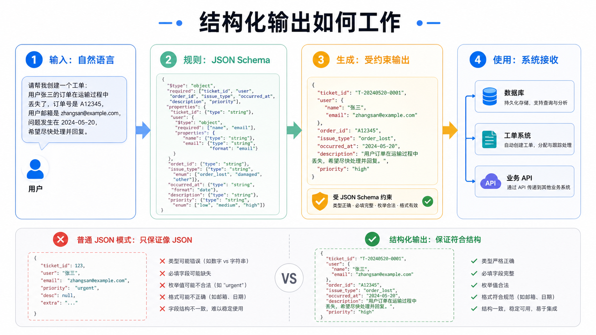

为什么这个概念重要？
很多人第一次用大模型，会觉得它已经很聪明：能写邮件、总结文档、回答问题。但只要你想把它接进真实业务系统，就会遇到一个很现实的问题：它写得再像人话，系统也不一定能用。
例如客服系统需要的是 订单号、问题类型、优先级、下一步动作。如果 AI 只返回一段漂亮文字，程序还要再猜：哪一个是订单号？严重程度是什么？该不该创建工单？一旦猜错，就可能漏单、误派、重复处理。
这也是 AI 行业离不开它的原因。RAG 让 AI 先查资料，Agent 让 AI 能调用工具，而结构化输出让这些能力真正进入软件系统。没有它，AI 很像一个会说话的同事；有了它，AI 才更像一个能按表格交作业的数字员工。
一个直观类比：餐厅点餐表
想象你在餐厅点餐。你可以自由地说：“我想要一份宫保鸡丁，不要辣，花生少一点，顺便备注一下我赶时间。”服务员能听懂，但后厨系统不一定能直接处理这句话。
餐厅真正需要的是一张固定点餐表：菜品、辣度、配料、备注、桌号、是否加急。每一栏都有固定位置，有些栏不能为空，有些栏只能选几个固定值。这样后厨、收银、配送都不会混乱。
结构化输出就是给 AI 一张这样的“固定表单”。用户可以随便说，AI 负责理解，但最后必须按表单交付。字段不能漏，类型要正确，枚举值不能乱写，系统才能直接执行。
工作原理（深入浅出）
结构化输出通常有三个核心角色：自然语言输入、结构规则、模型输出。
用户不用按表格说话，可以像平时一样描述问题、任务或资料。
规则常用 JSON Schema 表达：有哪些字段、字段是什么类型、哪些必须填写、哪些值可以选择。
模型不是随便写一段话，而是按指定结构输出，例如一个可解析的 JSON 对象。
程序检查输出是否合规。合规则写入数据库、创建工单、调用 API；不合规则拒绝或重试。
可以把 JSON Schema 理解成“数据合同”。合同写清楚：订单号必须是字符串，优先级只能是 low、medium、high，日期要符合格式，邮箱要像邮箱。模型要交付的不是“差不多像”，而是“能通过合同检查”。
它和普通 JSON 模式的差别很关键。普通 JSON 模式通常只要求“看起来是 JSON”；结构化输出要求“这个 JSON 必须符合指定结构”。前者像让学生用表格答题，后者像老师已经规定了每一栏怎么填。

关键术语解释
| 术语 | 专业解释 | 白话解释 |
|---|---|---|
| Structured Outputs | 让模型输出符合预设结构和约束的数据。 | 让 AI 按表格交作业，不随便写。 |
| JSON | 一种常见的数据交换格式，由键值对、数组、数字、字符串等组成。 | 程序之间传纸条用的标准格式。 |
| JSON Schema | 描述 JSON 数据结构、类型、必填字段和约束规则的规范。 | 一张规定每个格子怎么填的表单说明书。 |
| Validation | 检查输出是否符合规则。 | 像老师检查答题卡有没有漏填、填错格。 |
| Enum | 枚举值，字段只能从一组固定选项中选择。 | 例如优先级只能选低、中、高，不能写“特别急急急”。 |
| Function Calling | 模型选择某个函数或工具，并生成调用它所需的参数。 | AI 决定要叫哪个工具，并把表单填好交给工具。 |
| Constrained Generation | 在生成过程中限制模型只能产生符合某些规则的输出。 | 边写边检查，不能写出格式外的东西。 |
| Parser | 把文本解析成程序可处理数据的组件。 | 把 AI 写的内容读成机器能理解的表格。 |
一个真实应用案例
假设一个物流客服助手收到用户消息：“我的包裹 A12345 到中转场后两天没动了，我很着急，能不能帮我查一下？”
如果 AI 只返回一段自然语言，系统很难自动处理。但如果使用结构化输出，它可以返回类似这样的数据：
{
"order_id": "A12345",
"issue_type": "delivery_delay",
"urgency": "high",
"needs_human_followup": true,
"customer_summary": "用户反馈包裹到达中转场后两天无更新，希望尽快查询。"
}这段输出可以直接进入工单系统：订单号用于查询轨迹，问题类型用于分派，紧急程度用于排序，是否需要人工跟进用于触发客服队列。AI 不只是“回复用户”，而是在帮业务系统准备下一步动作。
常见误区（非常重要）
不够。JSON 只是格式，结构化输出还要检查字段、类型、必填项、枚举值等约束。
不能。它保证“格式更可靠”，但不自动保证事实正确。订单号可能格式对，但内容仍需查证。
不是。规则太复杂会提高维护成本，也可能降低模型表现。好 Schema 应该清晰、必要、稳定。
错误。真实系统仍然要在后端验证、限权、去重和记录日志，不能完全相信模型。
它们相关但不同。Function Calling 关注“调用哪个工具以及参数”，结构化输出更广，关注模型最终结果是否符合结构。
总结：3句话讲清核心认知
- 结构化输出让 AI 从“会表达”升级为“能按规则交付数据”。
- JSON Schema 像一张固定表单，规定字段、类型、必填项和可选值。
- 它不保证事实一定正确，但能显著提高 AI 接入业务系统、工具调用和自动化流程的可靠性。
复习问题
请用“表格答题”和“老师检查答题卡”的类比解释。
提示：区分格式可靠与事实可靠。
请从“工具能否稳定接收参数”的角度回答。